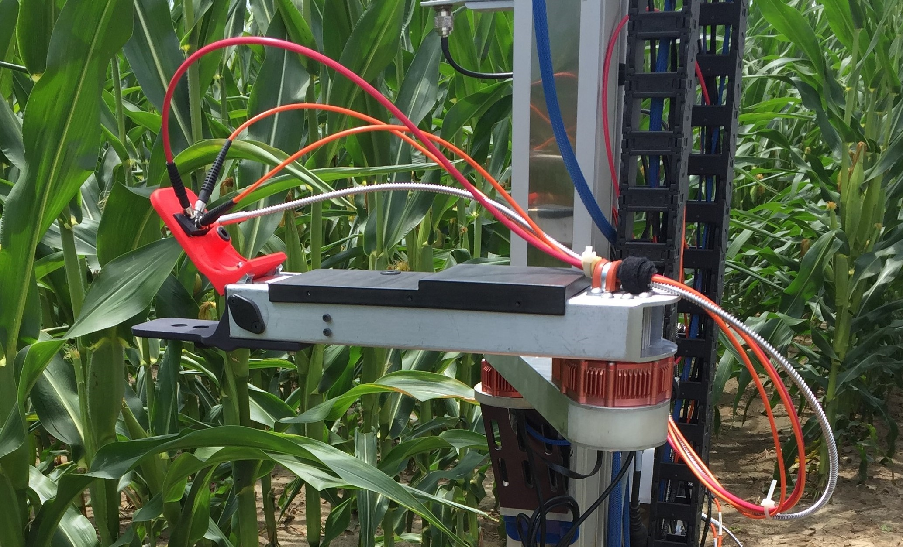
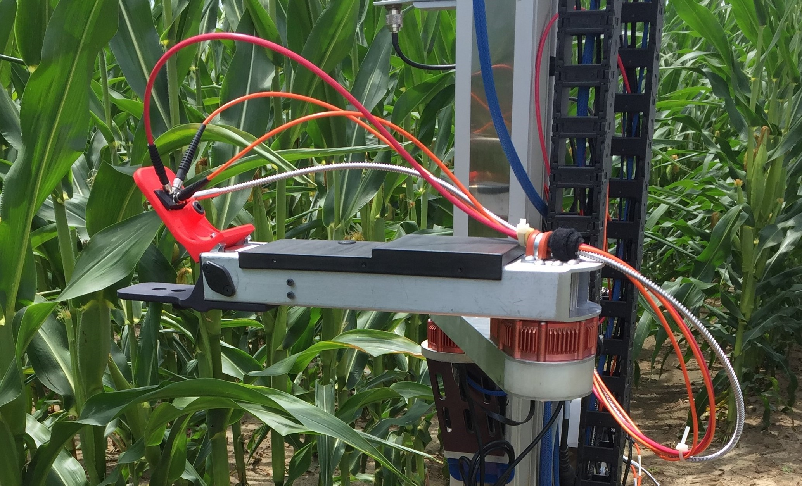

Leaf Grasping Manipulator
Project Overview:
As a part of my Masters research work at Carnegie Mellon University, I developed a custom manipulator capable of grasping crop leaves (similar to corn and sorghum). This manipulator is primarily designed to apply a reflectance spectrometer sensor to the surface of leaves to take rapid, autonomous spectral scans of crops. This leaf grasper was mounted to the pre-existing arm on the ground robot previously developed as a part of the same robotic crop phenotyping research project.
Example of Infield Robotic Leaf Grasping:
Contents:
- Existing Stalk Grasper
- System Requirements
- Leaf Grasper System Overview
- Mechanical and Electrical Design
Existing Stalk Grasper:
The first robotic manipulator on the mobile robotic platform was designed to detect and grasp sorghum stalks.The end effector consisted of two aluminum fingers that when actuated would enclose the stalk against the end of the arm. A rind penetrometer, or small needle connected to a force gauge, was then applied to the sorghum stalks. The force to penetrate the stalk wall with this needle was then recorded and used to predict stalk strength, a key trait used by plant geneticists in improving overall yield of the crop. The entire robotic arm and custom stalk grasping manipulator was designed by Merritt Jenkins, a past graduate student in robotics at Carnegie Mellon, whose works is detailed in his Master’s thesis.
System Requirements:
When the notion of robotic leaf grasping was first proposed within the scope of this project, it was immediately made clear that any new manipulator must be heavily derived from the previous stalk gripping manipulator. This was mainly the case to keep costs low while also limiting any significant change to the design of the mobile robot base. A functioning custom robotic arm along with software to control it was already in place, so recycling as much of this work into a new leaf grasping manipulator was seen as the best solution. Furthermore, if executed properly, the two manipulators could be quickly and easily swapped in and out depending on the task. With this challenge in mind, a list of system requirements were created to guide the design and development of this custom manipulator.
- System Mass: Less than 20 kg
- End Effector Mass: Less than 2 kg
- Reach: Must grasp leaves 0.5 m away
- Power: Less than 100 W
- Sealing: Must be rated for continuous outdoor use
- Cost: Less than $1,000 for updates to stalk grasper
The overall system mass was determined mainly by the original constraint set in the design of the stalk grasping manipulator. Extensive calculations were made by Jenkins to find a system mass and geometry that would ensure safe operation of the vertical stage motor and revolute joint actuators even under worst case dynamic loading during field testing. Similarly, the new end effector must be under 2 kg in mass. The reach capability of 0.5 m easily encompasses leaves to the immediate sides of the robot while navigating between crop rows. Similar to the original manipulator power constraint, the new design must take less than 100 W to operate in order to maintain current battery life and to not overload the max power ratings of the onboard DC-DC converters. The entire arm assembly and end effector must be properly sealed to survive continuous and long term outdoor use. As such, the manipulator should survive exposure to dust and dirt as well as light splashes. Lastly the updated leaf grasping design must accomplish its goal under all the above requirements and constraints for less than $1,000.
Leaf Grasper System Overview:
Given that the primary goal driving the design of this custom manipulator is to grasp leaves, the physical grasping mechanism was the first aspect of the system to be considered. The design for a new end effector was created that consists of two wide pads that clamp together around a leaf. More specifically, the gripper resembles a sort of jaw mechanism where the upper plate is actuated by a servo motor and the bottom plate is rigidly attached to the frame of the arm. When the end effector is positioned around a leaf, the top plate rotates downward to firmly press the leaf against the rigid bottom plate. A closer view of the end effector can be seen in images above.
This manipulator is also responsible for collecting reflectance spectra of leaves upon grasping. Therefore, another key component of the end effector is the way in which it positions fiber optic cables directly above the surface of leaves for collection of reflected light. In the images below, it can be seen that the upper red pad of the clamping mechanism has a rectangular opening near the top for mounting a separate, small adapter plate used to accurately position up to four fiber optic cables. The four cables are equally spaced around the circular opening on the flat, bottom face of the adapter plate so that the axis of each cable intersects at a common point in the center of this circular opening. Additionally, each cable sits at an angle of 45 degrees off of the surface normal of a grasped leaf. Lastly, the exposed end face of each fiber is positioned at an axial distance of 2 mm away from the center of the circular opening.
In order to provide feedback to the system on whether a leaf was successfully grasped and a spectral scan should be performed, an LED is mounted in a small cylindrical housing in the middle of the upper red clamp plate which can be seen in the right image above. A light sensor is mounted in a small opening along the surface of the rigid bottom plate so that the LED and sensor are positioned directly opposite of each other when the plates of the leaf clamp are touching. Therefore, if a leaf is between the two plates, the light sensor will detect little to no intensity from the LED and a successful grasp can be determined.
Mechanical and Electrical Overview:
Mechanical:
Just as with the stalk grasping manipulator, this system retains the same three degrees of freedom: a vertically mounted linear stage acts as a prismatic joint perpendicular to the ground plane and two HEBI X-5 actuators function as revolute joints at the shoulder and elbow of the two link robotic arm. In order to satisfy the reach requirement of 0.5 m, the aluminum tubes that make up the two arm frames were designed to provide an overall distance of 0.66 m from the axis of rotation of the shoulder joint to the center of the clamping plates on the end effector. Furthermore, the entire leaf grasping manipulator has an overall system mass of about 2.7 kg which is significantly less than the 20 kg constraints placed on the design. This low mass is largely due to the use of thin walled aluminum tubing to form the frame of the robotic arm as well as the use of 3D printed ABS plastic components to make up the end effector. In fact the entire end effector design has a mass of just under 0.4 kg which again is significantly less than the 2 kg constraint detailed above. The mechanical components used to actuate the upper plate of the clamping mechanism can be seen in the image below.
- (a) Tower Pro MG995R servo motor
- (b) Servo motor shaft coupler
- (c) Flange mount bearings
- (d) 3/16" steel shaft
- (e) Upper clamp plate
- (f) Shaft mounted clamp plate support
- (g) Nylon bevel gears
- (h) Servo shaft support
A Tower Pro MG995R high torque servo motor was selected to actuate the upper clamp plate. Although servo motors do not typically provide an incredibly robust and durable system for outdoor use, they do provide a low cost, light weight solution for actuating small loads with position feedback. This servo provides up to 8.5 kg-cm of torque at 5 V with a range of about 170 degrees. A shaft coupler connects the typical star toothed output shaft of the servo to a 3/16” diameter steel shaft that is secured by a shaft support to prevent any off axis bending forces on the servo motor. A set of small, nylon bevel gears transfers the rotary motion 90 degrees to another perpendicularly mounted 3/16” steel shaft. This shaft is mounted on each end by flanged ball bearings that are secured to the end of the aluminum frame of the forearm. Two custom shaft mounts were designed and machined to fit the geometry of the system and mate the upper clamp plate to the shaft.
In order to easily access the electronics and mechanical components within this section of the arm, a large cutout was made on the top face of the aluminum tube. This large opening is sealed using an ABS plastic plate that fully covers the opening and extends down the sides of the frame. Lastly, the opening in the aluminum frame at the leaf clamp end was sealed using a custom fit, 3D printed cap insert. This cap is also designed into the rigid base plate of the leaf clamp in order take advantage of the ease of complexity that comes with 3D printing as well as to reduce the number of overall parts and fasteners in the assembly.
Electrical:
The entire manipulator system can be powered off of 18-36 V and consumes an average of 45 W of power. The HEBI X-5 actuators draw an average current of 0.8 A at 24 V with a peak current draw of 2.4 A. On board regulation allows for these motors to be powered by 18 - 48 V. The servo motor is powered off of 5 V, which is provided by a CUI PDQ30-Q24-S5-D DC-DC converter that steps down a 9-36 V supply to 5 V for the servo. Under maximum loading, the servo draws up to 1.2 A of current. All together, each subsystem in the manipulator can be powered off of the unregulated ~24 V supply from the robot’s battery.
An Arduino Nano mounted on a small board behind the servo motor is used to control the motor as well as the state of the LED and analog voltage readings from the light sensor. A long USB cable is fed through the two aluminum frames and down to a bulkhead connector for communication with one of the onboard NUC computers. In a similar fashion, the HEBI actuators communicate with the onboard computers through an Ethernet cable that is routed through the robotic arm and down to the robot base.